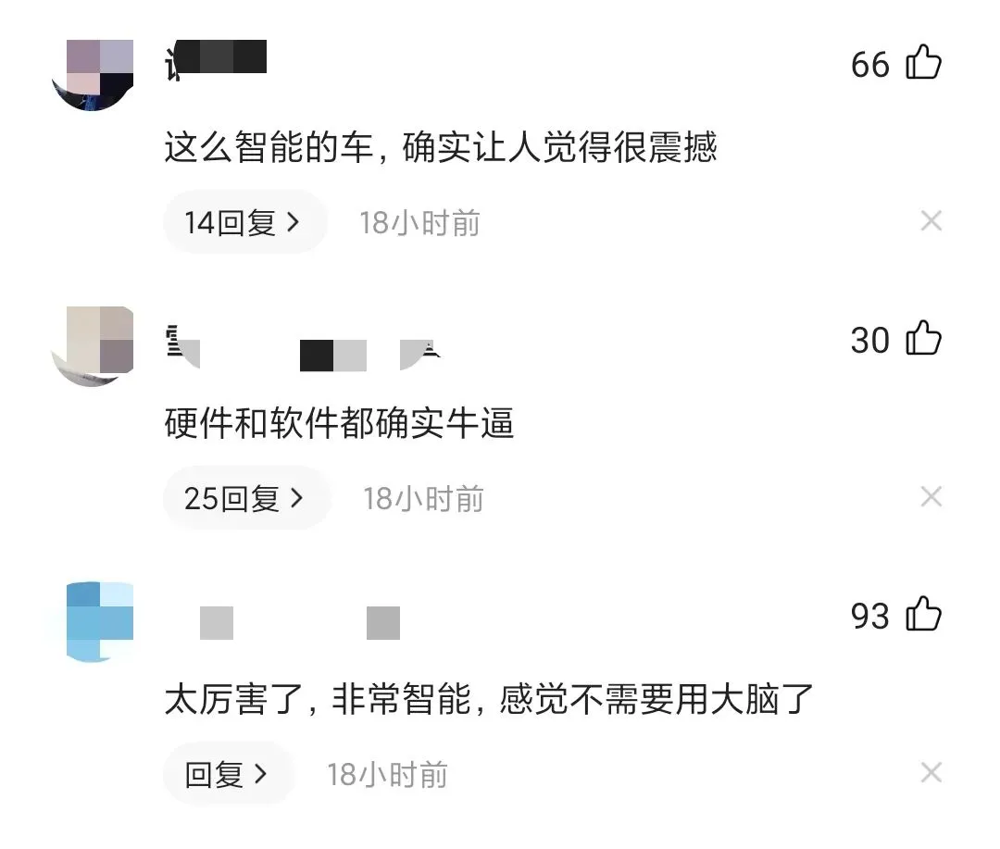
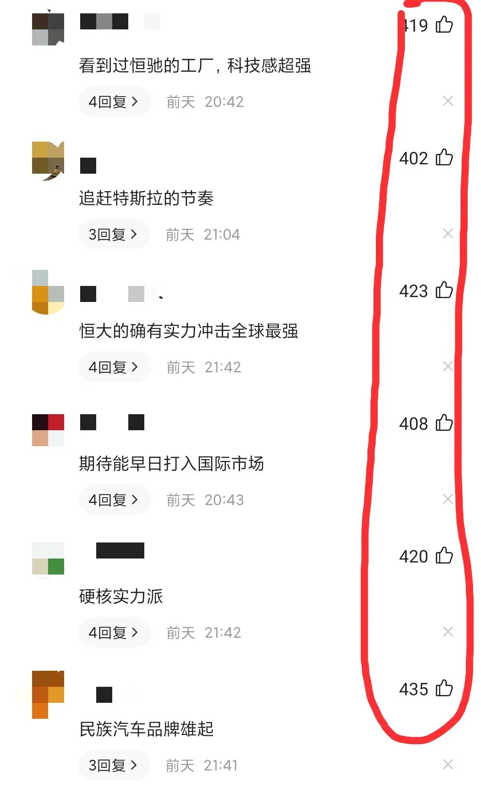
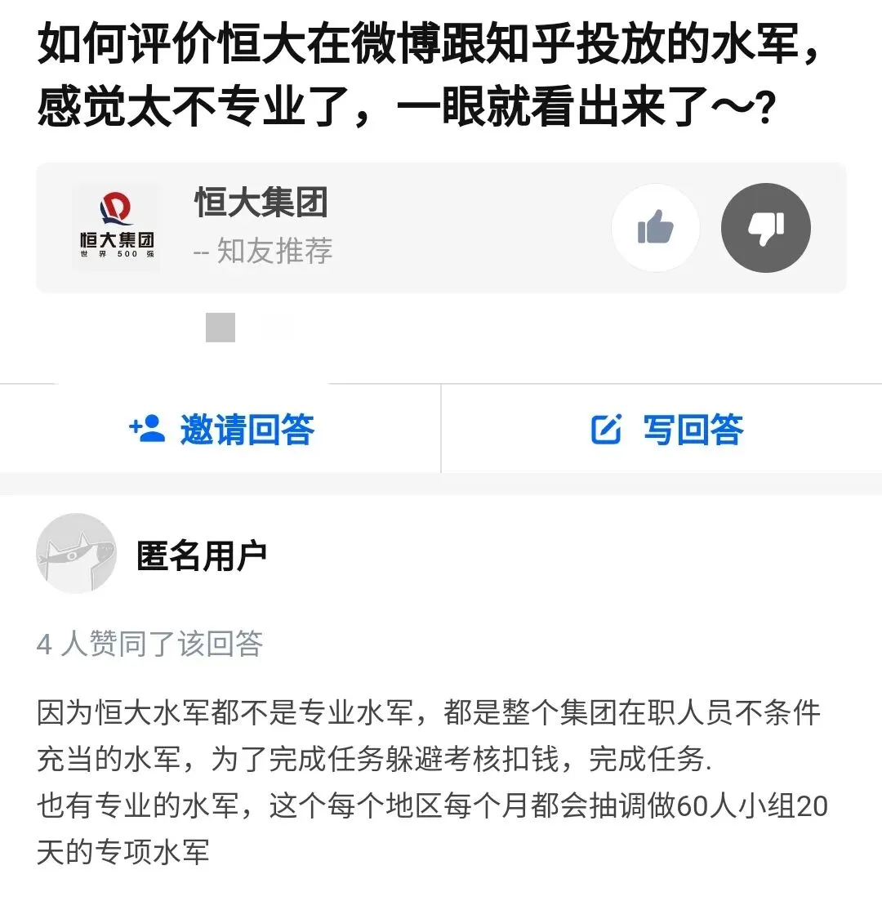
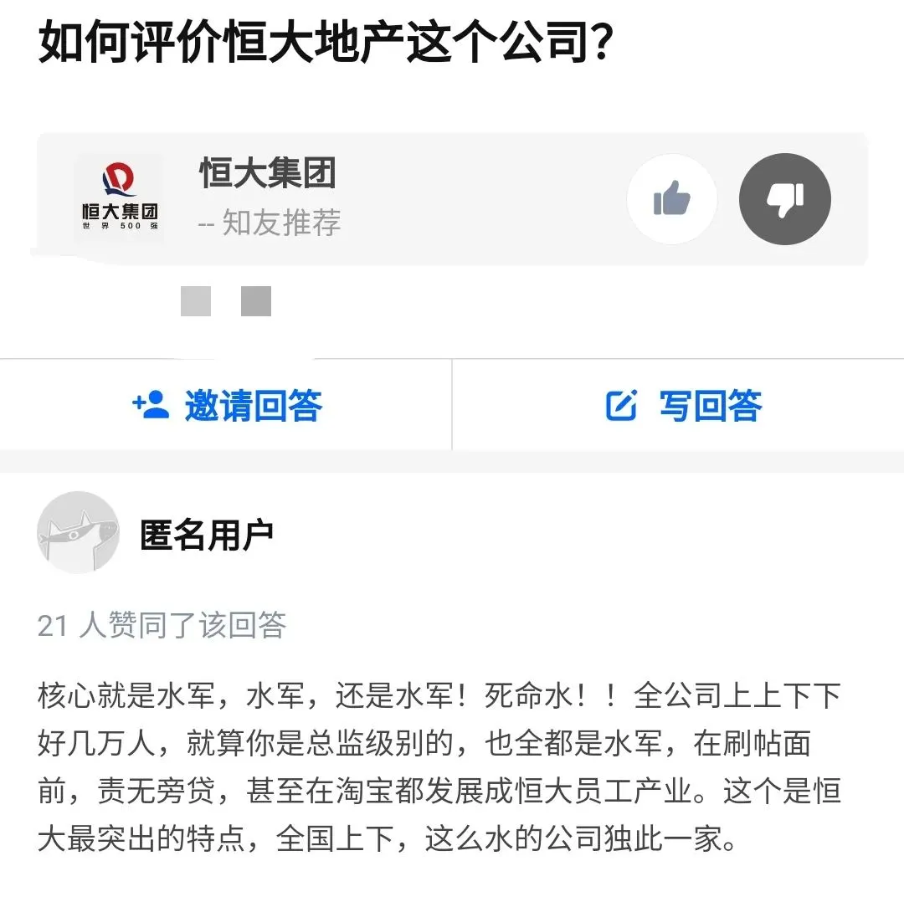
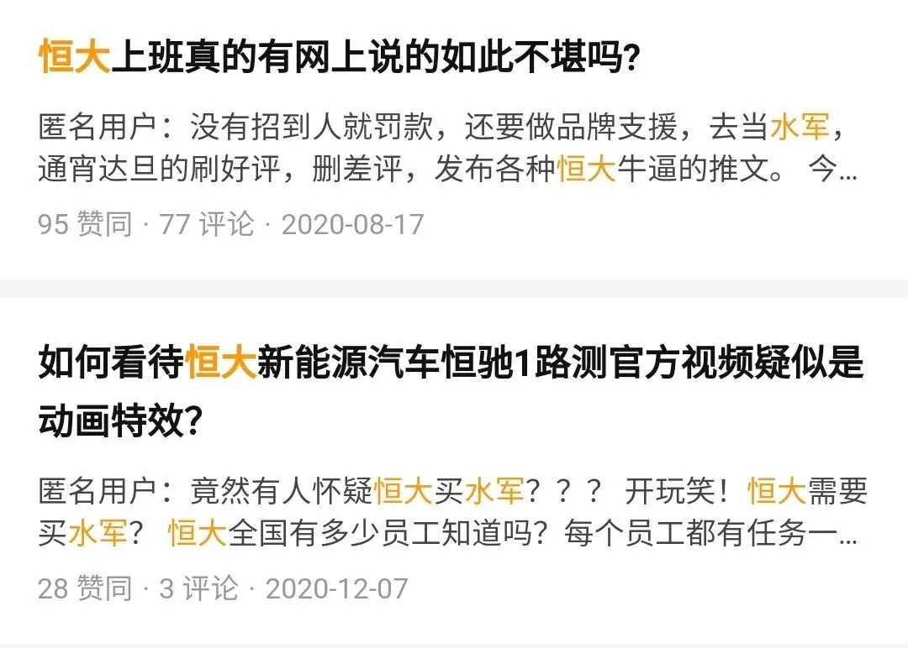
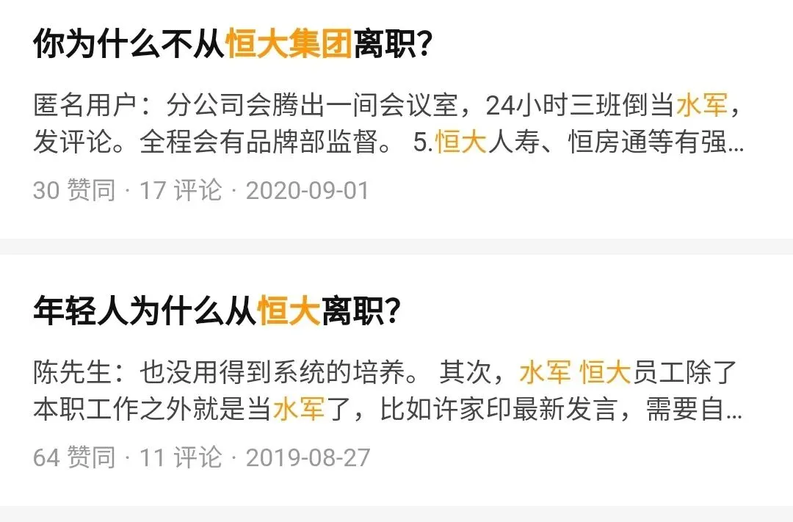
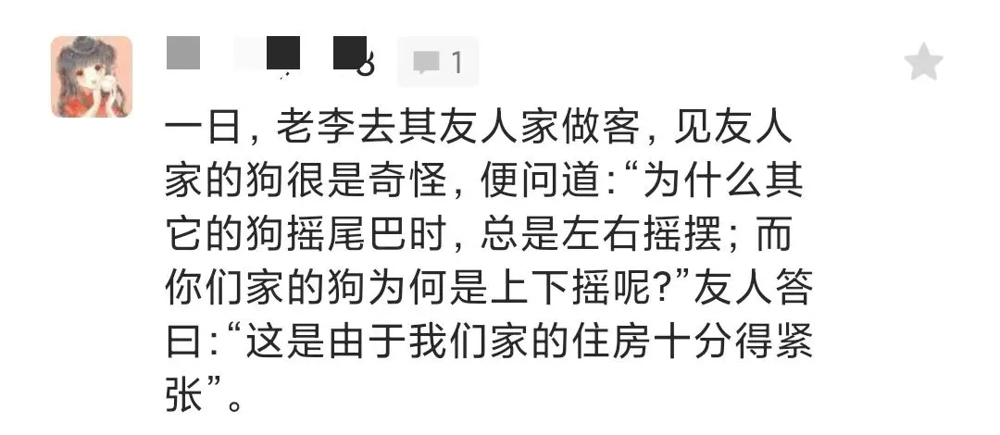
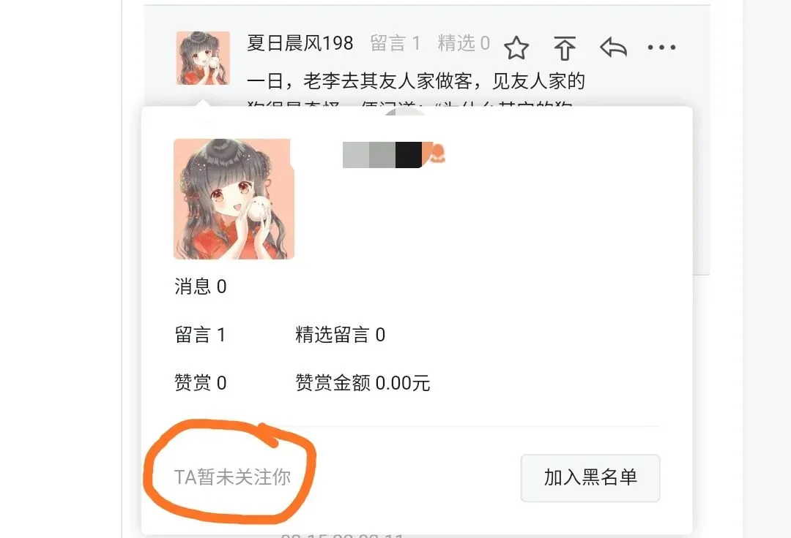

皇帝的新装恒大的水军
皇帝的新装，恒大的水军
每个月总有那么几天：
恒大屠版各大媒体平台，消息像蝗虫一样密密麻麻。
这不，又到了每个月总有那么几天的日子：25日至今，一直被恒大汽车的消息刷屏。适度宣传即可，过犹不及，让人反胃。缺什么，炫什么，典型的恒大“妖风”。
那么，今天就来说说恒大。
NO. 1｜壹
3月25日，恒大汽车公布了2020年全年业绩。26日，恒大汽车宣布从6名战略投资者处，收款210亿港元，并向其增发新股。
恒大汽车2020年全年营收154.87亿元，其中健康收入152.99亿元，新能源汽车收入仅有1.88亿元。净利润亏损76.65亿元，总负债1559亿元。
目前，恒大汽车市值5924亿元。
至于26日从6名战略投资者收款的210亿港元的事，早在1月24日已经公告过了，当时也是屠版各大媒体平台，1月25日，恒大汽车市值突破3900亿：
恒大汽车与6名投资者分别签订认购协议，以每股27.3港元定向增发公司扩大后总股数9.75%的股票，共筹集260亿港元。
目前来看，还有一笔50亿港元未到账。
恒大汽车前身是恒大健康，主要包括恒大集团旗下的大健康业务，恒大健康又是中国恒大在2015年以不到10亿元买下的壳。
对于恒大如此高市值，却一辆车也没落地，民间纷纷调侃：万事俱备，只欠汽车；PPT造车、路跑特效片、科幻版上市。
中国恒大持有恒大汽车67.64%股份，以当前的市值估算，即4006亿，但中国恒大当前的市值为1963亿元，很魔幻有没有？
就像，卖一套100万的房子，里面有价值200万的黄金。买这套房，只要100万，200万的黄金相当于直接附送（捆绑的）；但黄金单独卖，要200万。
玄机嘀咕着：这房子，会不会是危房？啥黄金，搞不好，只是表皮镀了一层薄金的黄铜。
NO. 2｜贰
从股份上看，中国恒大持有恒大汽车67.64%的股份。
而6名和恒大有极深渊源的战略投资者，共持有恒大汽车9.75%的股份，合计77.39%
如此高比例，将导致恒大汽车在股市中的流动性变差。
此前，曾经拜访过一位朋友，搞文玩的，文玩的常规操作就是减少流动性，使产品变得稀缺，并左手上架，右手买下，抬高市场价。
以过往操作的知名画家的画为例，如共创作1万幅画，搞文玩的会大肆收购约8000幅画，占有率达到约80%
然后做好画家作品稀缺性的舆论宣传，并将手头的画作挂到公开市场拍卖，再以高价将其拍下，抬高作品整体的市场价，引来更多人入局，将手头持有的作品卖出好价格。
控制好时间和频率，过段时间，再挂作品，再以更高的价格买下，进一步提高市场价，成交的价格高了，市场的热度和舆论的热度，自然进一步提升。
即提高市场占有率，降低市场流动性，然后陷入：造假-价格增长-市值增长-套现-继续造假的循环。
提高占有率高，降低流动性的好处，也就很明显了。事实上，文玩并不值那么多钱。
恒大汽车大部分的股票都集中在大股东恒大和机构投资者手中，日常流通交易的股票就很少，只需要少量的资金注入，就能推动股票上涨。
所以，市值是否足够扎实，是个问号。毕竟市值再高，在恒大汽车没有汽车之前，可能充斥着对未来的幻想，亦或者是流动性不足的自娱自乐。
高市值，却看不出哪里有坚固的支撑，这或许才是大众觉得魔幻的原因所在。
NO. 3｜叁
但网络上关于恒大的舆论，往往特别有趣，以此次恒大汽车为例，评论有很多这样的：

车还没落地，哪看出来的硬件牛逼？PPT描述的就非常智能？上一次PPT写得很好的，至今还在国外。
看这些评论，感觉他们确实不需要用大脑，无脑尬吹。还有这样的，总让人觉得有点尬：

你TM倒是先把造出来看看啊，车都没有，牛先吹上了，母牛们很恐慌，担心自己将来稀缺到成为保护动物。
经常写文章是一件容易厌倦的事。 天机的缓解方式之一，是经常去看恒大相关的资讯。 每次看完，心情总能变得愉悦，然后继续写稿。
一来是因为资讯和宣广本身，透露着浓浓的“微商，喜提和谐号动车”的荒谬感；二是因为，评论区总有那么些高赞，且驴头不对马嘴、自欺欺人的评论，让人啼笑皆非。
每次咱都看得不亦乐乎，一把年纪的人了，依然憋不住，笑得像个傻子。笑完了推荐给团队的人一起笑，感受一下什么叫：HD（皇帝）的新装。
媒体圈的江湖里，恒大的水军威名远扬，但恒大对水军一事，从未承认。 一些涉及负面的评论和舆情，特别是点赞高的评论，经常被毙，猜猜是谁的杰作？
来看看大家是怎么说的：

这个问题，咱有强烈的认同感，几乎一眼就能看出哪些人是水军。答案也认可，团队里有个在恒大工作过4年的，手机里资料密密麻麻，看了头皮发麻。

特意问了好几位恒大的相关人士，表示太过真实。

嗯，还是水军，再看：

这么多水军，要是放三国时期，别说是水淹七军了，连诸葛亮北伐都能成功吧？
不知道拿着500元年终奖的恒大人，干着投诉举报、消除自己同事在平台上说恒大500元年终奖的事时，心里是什么感受。
NO. 4｜肆
一般来说，在公众号遭遇恒大等房企的水军，往往很容易甄别，他们干涉评论区的方法很初级、简单。
往往集中一大片留言，评论内容要么和文章本身无关，文不对题，要么往对房企评价高和好的思想觉悟方向引导。
若能有幸通过审核，顺利入围，就把入围的评论，通过点赞的方式顶到前方，让负面的评论下沉。
万一自己人的所有留言都没能突围，那么，就把同行的负面点赞排到前面，让有关自己企业的负面评论下沉到后方。
比如会发一些和文章没有丝毫关系的评论，然后点赞排到前列：

然后点开她的资料来看看，会发现是这样的：

这些水军可能对公众号不太熟悉，不知公众号有显示读者关注的具体时间，一群唱好的水军，仔细一看，有个很明显的共同特征：都没有关注公众号。
高级一些的控评，是房企花钱在公众号上投放软文宣广，而评论区的内容经过号主控评，对房企好的评论入选，负面的移除。
所以一家问题多的房企，如果留言区却是清一色的唱好之声，大概率是水军洗地。
水军的评论，有四大特征：很像机器刷出来的赞歌评论、评论区中最高的一批点赞量、在评论区中排最前列、涉及负面的评论大多过阵子就会消失不见。
按这标准来看，恒大相关文章的评论区往往四大特征都中。
而在头条和知乎上那些发表对恒大看法的言论中，涉及负面的评论，大多活不久，就被删除和折叠了，将剩下的评论汇总成一句话，大概是：
许老板牛逼，许老板万万岁吧？
防民之口甚于防川，堵不如疏、过犹不及（ 若这篇文章也被攻陷了，以后恒大就是天机的座上宾，每个月给他来几篇，VIP级待遇。 ）
7个月前，债务罗生门事件，恒大公告称已报警： 7个月过去了，报警结果出来了没？
恒大这么牛逼的企业，给人留下做事虎头蛇尾的印象可不好，还是要有始有终，毕竟是世界五百强。
恒大汽车的汽车尚未面市，房车宝这个终极大BOSS已经在筹划上市进程了。有了地产、汽车，再搞个房车宝，将地产和汽车的产品，经房车宝这个平台销售成交。
如此一来，地产有业绩和回款、汽车有销量，房车宝有GTV（总交易额），对资本市场都有故事可以讲，获取高市值很容易，三赢。
实在不行，还有恒大的那么多员工兜底，在盛京银行等分期、贷款，搞一部恒大汽车，不愁销量

此前的恒大冰泉、恒大粮油等没做成功，或许是因为没搞个泉粮油宝。
文末左下角的“ 阅读原文 ”，天机关联号都在内，有效鉴别“李鬼”号，勾搭天机本尊。文末右下角 **“点赞、在看 ** ”，可及时收到公众号的更新信息。
按日期浏览全部来源（同日按条目标识排序）